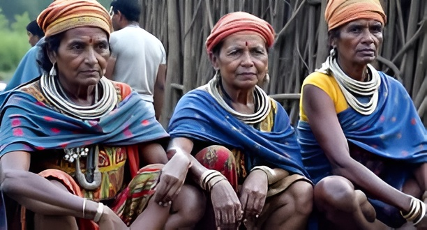
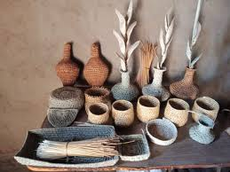
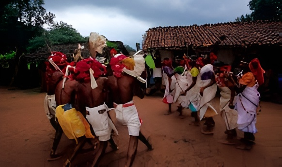
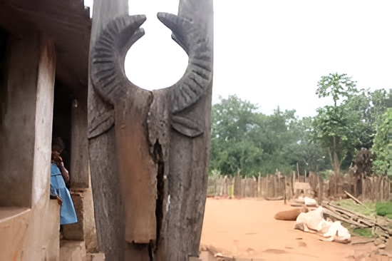

Traditional Dress
The traditional dress of Kandhamal, Odisha, shows the simple and colorful
lifestyle of its tribal people. Men usually wear cotton dhotis, while women wear bright sarees,
often decorated with natural patterns. Women also love to wear handmade jewelry of beads and
brass, which adds beauty and reflects their culture.

Local Handicrafts
The local handicrafts of Kandhamal, Odisha, are famous for their unique
beauty. Tribals make colorful dokra art, bamboo work, and ornaments from beads and brass. These
handicrafts are not only used in daily life but also sold in markets, showing the skill and
tradition of the people.

Traditional Dance
The traditional dance of Kandhamal, Odisha, is an important part of
tribal
culture. People perform folk dances during festivals and celebrations, wearing colorful clothes
and ornaments. The dances are usually done in groups with songs and drums, showing unity and joy
in the community.

Traditional Heritage
The heritage of Kandhamal, Odisha, lies in its tribal culture, festivals,
crafts, and natural beauty. The people preserve age-old traditions through their dress, dance,
music, and handicrafts. Its hills, forests, and temples also form an important part of the
district’s rich heritage.